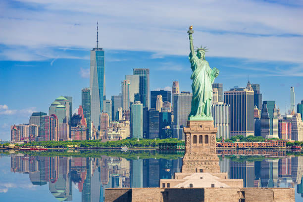

48 Hours in New York City
The Perfect Itinerary
Morning: Walk the High Line + Chelsea Market breakfast. Afternoon: MoMA + Central Park bike rental. Evening: Broadway show + late-night pizza at Joe's.
Neighborhood Secrets
Skip Times Square for Roosevelt Island's tram with skyline views. Queens' ethnic eateries offer better food at half Manhattan prices. The Met's rooftop bar has unbeatable sunset views.
Navigating Like a New Yorker
Subway unlimited passes beat cabs. Walk everywhere possible - you'll discover hidden gems. "Downtown" means south, not necessarily lower Manhattan.
NYC Tips
- Download Citymapper for transit
- Museum tickets often include same-week entry
- Food trucks offer great quick meals
- Visit top attractions at opening/closing